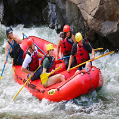

As we pushed off from the shore, the sun beat down on our raft, illuminating the swirling eddies of the river. Our guide, a grizzled veteran of the rapids, stood at the helm, his eyes scanning the water for The river narrowed, and the current quickened. We picked up speed, and the raft began to buck and twist. My heart racing, I gripped the oar tightly, feeling the rush of adrenaline as we plunged into the first "Row!" our guide yelled, and we dug our oars into the water. The raft surged forward, dodging rocks and navigating the turbulent waters. I felt alive, connected to the river and my fellow rafters. As we pushed off from the shore, the sun beat down on our raft, illuminating the swirling eddies of the river. Our guide, a grizzled veteran of the rapids, stood at the helm, his eyes scanning the water for any sign ofThe river narrowed, and the current quickened. We picked up speed, and the raft began to buck and twist. My heart racing, I gripped the oar tightly, feeling the rush of adrenaline as we plunged into the first rapid. "Row!" our guide yelled, and we dug our oars into the water. The raft surged forward, dodging rocks and navigating the turbulent waters. I felt alive, connected to the river and my fellow rafters.

SPLASH WHITEWARTER RAFTING
HISTORY
Rapid Rush" is a web development project aimed at creating an exciting and informative website for a whitewater rafting company. The website will showcase the company's rafting trips, services, and safety measures, while also providing an engaging user experience. Rapid Rush" is a web development project aimed at creating an exciting and informative website for a whitewater rafting company. The website will showcase the company's rafting trips, services, and safety measures, while also providing an engaging user experience. Rapid Rush" is a web development project aimed at creating an exciting and informative website for a whitewater rafting company. The website will showcase the company's rafting trips, services, and safety measures, while also providing an engaging user experience. Rapid Rush" is a web development project aimed at creating an exciting and
Rapid Rush" is a web development project aimed at creating an exciting and informative website for a whitewater rafting company. The website will showcase the company's rafting trips, services, and safety measures, while also providing an engaging user experience. Rapid Rush" is a web development project aimed at creating an exciting and informative website for a whitewater rafting company. The website will showcase the company's rafting trips, services, and safety measures, while also providing an engaging user experience. Rapid Rush" is a web development project aimed at creating an exciting and informative website for a whitewater rafting company. The website will showcase the company's rafting trips, services, and safety measures, while also providing an engaging user experience. Rapid Rush" is a web development project aimed at creating an exciting and
ADVENTURE AWAITS YOU